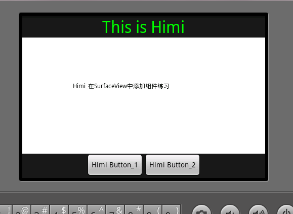

【Android2D游戏开发之六】在SurfaceView中添加组件！并交互数据
1.因为我们的SurfaceView是个View对于添加的组件其实也是View，如果我们只是一味的想在SurfaceView中添加View组件其实是错误的思想，当然我一开始也是想着直接在SurfaceView中定义或者去使用组件，但是结果肯定是不成功的。
2.既然第一条肯定是错误的，那么我们就应该想到把我们的SurfaceView和组件都放在一个Layout里面，毕竟我们的的SurfaceView也是一个view和其他组件一同放在我们的layout里，那么这样一来肯定就能完成在SurfaceView中添加组件的目的啦。下面先上截图：

大家看到中间白色区域就是我们的SurfaceView啦，最上方是组件TextView，最下方是Button、对的，要的就是这个效果！而不是像前面文章中多个Activity切换，这样都在一个界面中啦。哇哈哈啊。好、下面来看代码吧：先放上Xml代码:
<?xml version="1.0" encoding="utf-8"?><LinearLayout xmlns:android="http://schemas.android.com/apk/res/android
android:layout_width="fill_parent
android:layout_height="fill_parent
android:orientation="vertical" >
<LinearLayout
android:layout_width="wrap_content
android:layout_height="wrap_content
android:layout_gravity="center
android:orientation="horizontal" >
<TextView
android:id="@+id/textview
android:layout_width="fill_parent
android:layout_height="fill_parent
android:gravity="center_horizontal
android:text="This is Himi
android:textColor="00FF00
android:textSize="32sp" />
</LinearLayout>
<FrameLayout
android:layout_width="fill_parent
android:layout_height="wrap_content
android:layout_weight="1" >
<com.himi.MySurfaceView
android:id="@+id/view3d
android:layout_width="fill_parent
android:layout_height="fill_parent" />
</FrameLayout>
<LinearLayout
android:layout_width="wrap_content
android:layout_height="wrap_content
android:layout_gravity="center
android:orientation="horizontal" >
<Button
android:id="@+id/button1
android:layout_width="wrap_content
android:layout_height="wrap_content
android:text="Himi Button_1" />
<Button
android:id="@+id/button2
android:layout_width="wrap_content
android:layout_height="wrap_content
android:text="Himi Button_2" />
</LinearLayout>
</LinearLayout>
以上代码很简单，都是一些布局方式和各个组件一些属性及显示方式的设定，当然主要看如何对我们的SurfaceView如何注册在xml中的，那么每个组件都有id这样为了对后面其交互数据用到，因为我们要对每个组件操作，所以这里都索引了id方面从R文件中取出其对象。那么，xml我们定义好了，看看代码中如何实现的，这里先说下Activity类中代码：
import android.app.Activity;import android.os.Bundle;
import android.view.View;
import android.view.Window;
import android.view.WindowManager;
import android.view.View.OnClickListener;
import android.widget.Button;
import android.widget.TextView;
public class MainActivity extends Activity implements OnClickListener {
private Button button1, button2;
private TextView tv;
@Override
public void onCreate(Bundle savedInstanceState) {
super.onCreate(savedInstanceState);
this.requestWindowFeature(Window.FEATURE_NO_TITLE);// 隐去标题（应用的名字)
// 此设定必须要写在setContentView之前，否则会有异常）
this.getWindow().setFlags(WindowManager.LayoutParams.FLAG_FULLSCREEN,
WindowManager.LayoutParams.FLAG_FULLSCREEN);
setContentView(R.layout.main); // 要先显示,然后再对其组件取出、处理操作
tv = (TextView) findViewById(R.id.textview);
button1 = (Button) findViewById(R.id.button1);
button1.setOnClickListener(this);// 这里是监听按键，因为本类使用了OnClickListener接口
button2 = (Button) findViewById(R.id.button2);
button2.setOnClickListener(this);
/*
* 其实大家也可以不用本类使用接口，可以内部类来完成。 以下是不使用OnClickListener接口的绑定监听方式;
* button2.setOnClickListener(new OnClickListener() {
*
* @Override public void onClick(View v) { //这里处理按键操作
*
* } });
*/
}
@Override
public void onClick(View v) {
if (v == button1) {
MySurfaceView.button_str = "button 1被触发";
tv.setText("button 1被触发");
} else if (v == button2) {
MySurfaceView.button_str = "button 2被触发";
tv.setText("button 2被触发");
}
}
}
该有的备注在代码后面都备注了，MySurfaceView.button_str，这个是自己的SurfaceView中定义的一个static 的变量用来交互数据用到；在那么下面就要看我们的SurfaceView，当在Xml注册需要注意什么了，我半天的时候都花在了这里！！！一定要引起注意，这也是在SurfaceView中并显示组件完成最重要的一步。先分析：1.SurfaceView类的创建和实现等等和之前都是一样的，该怎么去写还怎么去写，但是！构造函数一定要注意！
/** public MySurfaceView(Context context) { super(context);
* }//备注1（这里一定要引起注意，仔细看下文对备注1的解释 ）
*/
public MySurfaceView(Context context, AttributeSet attrs) {// 备注1}
}
这里解释下备注1： 这里有两个构造函数，当然我们用哪个都是可以的，但是在此时我们需要明确我们到底要使用哪个。一个参数的构造函数：如果是new出来的此类实例肯定是没有问题，但是我们为了能在显示SurfaceView同时显示别的组件，所以把自定义的SurfaceView也当作组件注册在了main――xml中，所以这里需要注意，当在xml中注册的就必须加上这种含有两个构造函数的构造方法，xml初始化的时候会调用两个参数的这个构造方法，（当时这个问题困扰了半天的研究时间，最后在一个群友的帮助下才发现是这里出了问题）那么含有两个构造参数的方法里第二个参数指的自定义的组件的一些属性,就像长宽一样，你可以给组件属性,就是通过这个来传递的！那么在SurfaceView中并一同显示组件也就到底完结了，回顾下，一共分为3步：
1.将我们的SurfaceView 作为一个组件view 和其他组件一同放置到布局中，当然布局的方式和显示的方式大家自己随自己喜欢定义！
2.在我们的SurfaceView中一定要使用两个构造函数的构造函数，一定！一定！ 就这里有区别，别的还是该怎么处理就怎么处理，就是构造函数换了
3.交互数据，对其按键的绑定在activity中完成，别把view绑定在咱们的SurfaceView中啊，否则报错--、这里说下为什么要在activity中去绑定按键处理而不是在我们的surfaceview中去绑定：其实根据xml中定义button时的id我们可以通过R.id索引取到button，不管在activity中还是我们的surfaceview中都可以取到，
但是！绑定button这一步如果在surfaceview中去写就一定报错，原因我解释下；我们在xml中定义我们的surfaceview和组件button、textview等等的时候他们是同一级别的！！而不是把button包含在surfaceview里，所以虽然在surfaceview中可以根据id索引到button但绑定的时候是无法找到button的，只有我们的activitysetContentView(R.layout.main); 显示的button，所以只能在显示它的activity中去绑定，这里需要注意下。